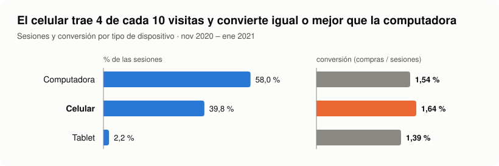

Una pregunta de negocio, no un ejercicio de SQL
Una tienda en línea invierte en varios canales: búsqueda orgánica, anuncios de Google, referencias, correo. La pregunta que haría cualquier gerente es simple: ¿qué canales traen visitas que terminan en compra, y en qué paso del camino se pierde la gente?
Para responderla usé el dataset público de Google Analytics 4 de la Google Merchandise Store en BigQuery: datos reales (ofuscados por Google) del 1 de noviembre de 2020 al 31 de enero de 2021.
Cinco consultas, un informe por avances
JOIN.Cada resultado se guarda en CSV y un script genera los gráficos, así el análisis se puede reproducir de punta a punta. Todas las consultas leen menos de 1 GB: caben en el modo gratuito de BigQuery.
La fuga está antes del carrito

- 80 % de quienes ven un producto no lo añade al carrito. Es la mayor pérdida y donde más rinde mejorar (fotos, precio visible, envío).
- 6 de cada 10 carritos nunca empiezan el pago.
- Una vez en el pago, 8 de cada 10 completan cada paso: el proceso de pago funciona bien.
Más visitas no es más ventas


| Canal | Sesiones | Conversión |
|---|---|---|
| Google orgánico | 112 678 | 1,29 % |
| Directo | 83 459 | 1,50 % |
| Autorreferencia (la propia tienda) | 28 849 | 2,43 % |
| Anuncios de Google (cpc) | 15 617 | 1,06 % |
- Google orgánico trae el 31 % de las visitas, pero convierte por debajo del promedio.
- Los anuncios de Google tienen la peor conversión (1,06 %) y el ticket más bajo (USD 54,6): es el primer canal a revisar.
- El 8 % de las sesiones son autorreferencias, un error de medición que le quita el crédito a los canales reales.
- El celular ya no es secundario: 40 % de las visitas y convierte igual o mejor que la computadora.
Solo 1 de cada 10 clientes nuevos regresa

En promedio vuelve el 10,7 % en 30 días, casi todos en la primera semana. Los usuarios de noviembre retienen hasta el doble (12,9 %) que los de diciembre (8,3 %): quien compra un regalo navideño rara vez regresa.
De los datos a las decisiones
- Atacar la página de producto antes que el pago: es donde está el 80 % de la fuga.
- Revisar las campañas de Google Ads antes de subir el presupuesto: hoy son el canal que peor convierte.
- Corregir las autorreferencias en la configuración de GA4 para medir bien cada canal.
- Una campaña de correo en enero para los compradores de diciembre, la cohorte que menos vuelve.
Lo que este proyecto demuestra
- SQL de verdad: tablas por día, funciones de ventana,
JOIN, cohortes y embudos por usuario en BigQuery. - Pensamiento de negocio: cada consulta responde una pregunta que un gerente haría.
- Rigor: limitaciones explicadas y una cifra propia corregida cuando el método mejoró.
- Reproducible: consultas, resultados y gráficos públicos en GitHub.
Ver el repositorio en GitHub → · Leer el informe completo →